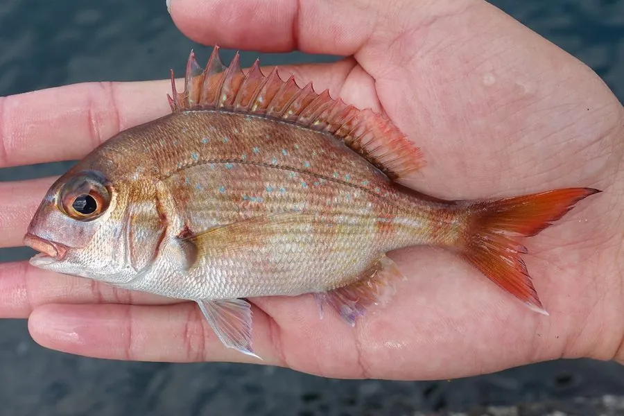

鱼类 · 动物界
真鲷 Pagrus major

体色鲜红、体侧有蓝色斑点的鲷科鱼类，肉质鲜美，是东亚重要的食用和游钓鱼种，也是“加吉鱼”的原型。
- 分类
- 门脊索动物门纲辐鳍鱼纲目鲈形目科鲷科属真鲷属
- 栖息环境
- 近岸岩礁、沙泥底质和海藻床，水深 10–200 m
- 地理分布
- 西北太平洋，包括中国沿海、台湾、日本和朝鲜半岛
- 保护级别
- IUCN 无危（LC）；中国未列入国家重点保护野生动物名录
物种志
真鲷体呈椭圆形，侧扁，头大，眼大，体色鲜红或粉红，体侧散布着许多亮蓝色小斑点，背鳍和尾鳍带淡红色。成鱼体长一般 30–50 cm，最大可达 1 m 左右，体重可达 8 kg。
真鲷分布于西北太平洋，包括中国沿海、台湾、日本、朝鲜半岛和俄罗斯远东沿岸。它栖息在近岸岩礁、沙泥底质和海藻床，水深 10–200 m，捕食虾蟹、贝类、小鱼和环节动物。真鲷在繁殖期会集群洄游到浅水，雌鱼产卵量可达数十万粒。它是东亚重要的食用鱼，肉质洁白鲜美，中国和日本都有人工养殖和增殖放流。由于捕捞压力，野生资源有所下降，目前 IUCN 评估为无危。
形态与习性
- 食性虾蟹、贝类、小鱼和环节动物
- 体长一般 30–50 cm，最大可达 1 m 左右
- 体重常见 1–3 kg，最大可达 8 kg
- 体色鲜红或粉红，体侧有亮蓝色小斑点
- 繁殖繁殖期集群洄游到浅水，产卵量可达数十万粒
- 经济价值东亚重要食用鱼，中国和日本均有养殖
趣味知识
- 真鲷体侧的亮蓝色斑点在水中会反射出金属光泽。
- 它是日本料理中重要的喜庆鱼，常出现在节庆宴席上。
- 真鲷雌鱼一次可产数十万粒卵，但幼鱼成活率并不高。